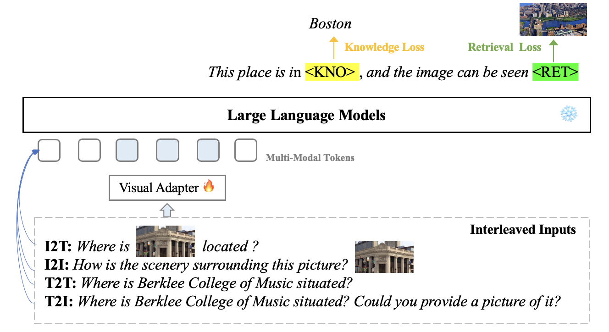

Currently, Large Visual Language Models (LVLMs) have integrated various tasks, and some ``any2any'' models have emerged, enabling support for diverse modalities for input and various output formats, thereby expanding the impact of LVLMs. However, we note that existing models remain incomplete and distant from real-world applicability, primarily due to two key factors: partial functionality and lack of connection with world knowledge. Firstly, we stress the importance of a comprehensive LVLM that accommodates various input and output paradigms, which should be interleaved, multi-turn, and multi-lingual. However, there is no multi-modal framework capable of fully encompassing all functionalities. Moreover, textual knowledge often lacks substantial connections with the visible objective world, resulting in visual and language alignment limited to the semantic level, detached from objective facts. This limitation leads to models generated primarily through imagination rather than a grounded understanding of the world. To bridge the gap between LVLMs and the visible real world, we propose a novel multi-modal framework, KnowBLIP, designed to support a comprehensive, world-grounded, ``any2any'' paradigm. Specifically, we have collected a dataset, IWK-500k, of multi-modal objective knowledge derived from reasoning on multi-modal knowledge graphs, characterized by interleaved, multi-turn, and multi-lingual attributes. Furthermore, we have developed the KnowBLIP, capable of accommodating various input and output paradigms based on IWK-500k dataset. Extensive experiments have demonstrated the effectiveness of our approach.
To bridge the gap between LVLMs and the visible real world, we propose a novel multi-modal framework, KnowBLIP, designed to support a comprehensive, world-grounded, ``any2any'' paradigm.
We evaluate various models including LLMs and LMMs. In each type, we consider both closed- and open-source models. Our evaluation is conducted under a zero-shot setting to assess the capability of models to generate accurate answers without fine-tuning or few-shot demonstrations on our benchmark. For all models, we use the default prompt provided by each model for multi-choice or open QA, if available. If models do not provide prompts for task types in MMU, we conduct prompt engineering on the validation set and use the most effective prompt for the later zero-shot experiment.
| Model | Text2Text Acc | Image2Text Acc | Text2Image R@1 | Text2Image R@5 | Image2Image R@1 | Image2Image R@5 |
|---|---|---|---|---|---|---|
| VisualGLM | 8.54% | 7.53% | - | - | - | - |
| Qwen-VL | 14.57% | 12.56% | - | - | - | - |
| MiniGPTV2 | 12.06% | 1.50% | - | - | - | - |
| GILL | 8.10% | 11.75% | 0.00% | 2.95% | - | - |
| TextBind | 18.20% | 21.02% | 2.98% | 4.13% | 2.21% | 4.70% |
| LLaVA-1.5-7B | 6.09% | 10.20% | - | - | - | - |
| CogVLM-chat-v1.1 | 14.45% | 17.41% | - | - | - | - |
| GPT-4V | 61.53% | 55.88% | - | - | - | - |
| Gemini-1.5-pro | 56.41% | 41.53% | - | - | - | - |
The four formats of the IWK-300K dataset endow KnowBLIP with a diverse array of functionalities, enabling it to handle a wide range of tasks and scenarios related to real world knowledge. To illustrate these capabilities, we present several concrete user cases.